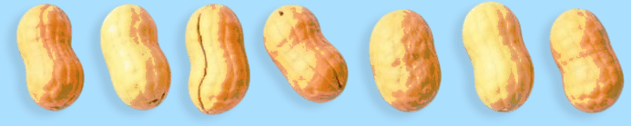
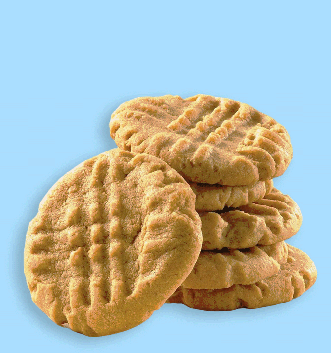

To
make the peanut butter cookies you'll need:
9½ oz. crunchy unsweetened peanut butter
3/4 cup of white sugar
2 drops of vinalla
extract
1 egg, beaten

To make the peanut butter cookies:
Preheat the oven to 350 F and grease several baking trays.
In a medium sized
bowl peat the peanut butter and sugar together, then beat in the vanilla
extract and the beaten egg. The dough should be very stiff.
Roll the mixture into
small balls and space them on the trays. Flatten them with a fork and
place the trays in the oven.
Bake for between 12
- 15 minutes or until the cookies are golden brown. (Don't forget to
turn off the oven when you are finished!) Leave the cookies on the trays
for several minutes to cool and then transfer them into an airight container.
Enjoy!
Once
you are done baking the cookies why not invite your best friend to share
your new creation? Good food and good friends always go well together!
|